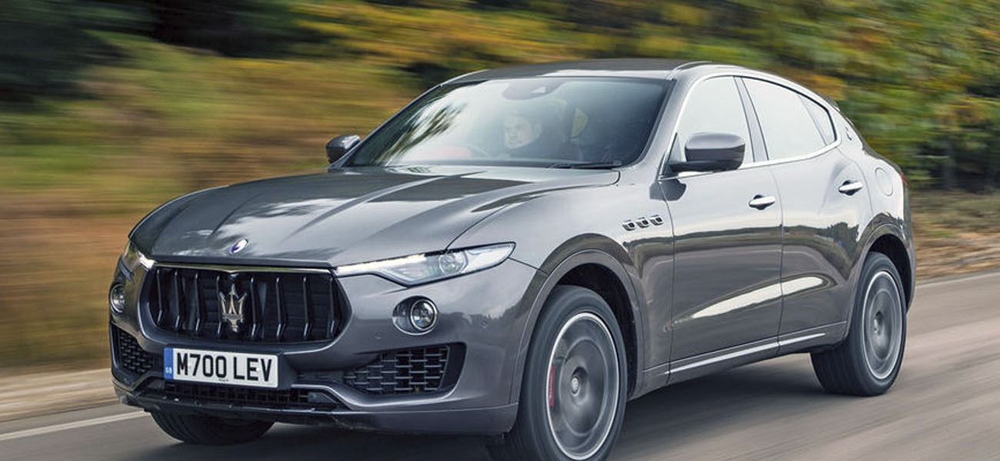

Maserati Levante- кроссовер от компании Maserati, который был официально представлен в 2011 году на автосалоне во Франкфурте как концепт-кар под названием Maserati Kubang, позже серийная модель, дебютировавшая на автосалоне в Женеве в марте 2016 года, получила название Levante.
Сначала автомобиль базировался на платформе Jeep Grand Cherokee, однако вскоре получил другую платформу - от Maserati Ghibli. На автомобиль устанавливаются бензиновые турбомоторы 3,0 л мощностью 350 и 430 л.с. производства Ferrari, а также турбодизель 3,0 л мощностью 250, 275 и 340 л.с. производства итальянской компании VM Motori. Двигатели работают в паре с восьмиступенчатой АКПП ZF 8HP.